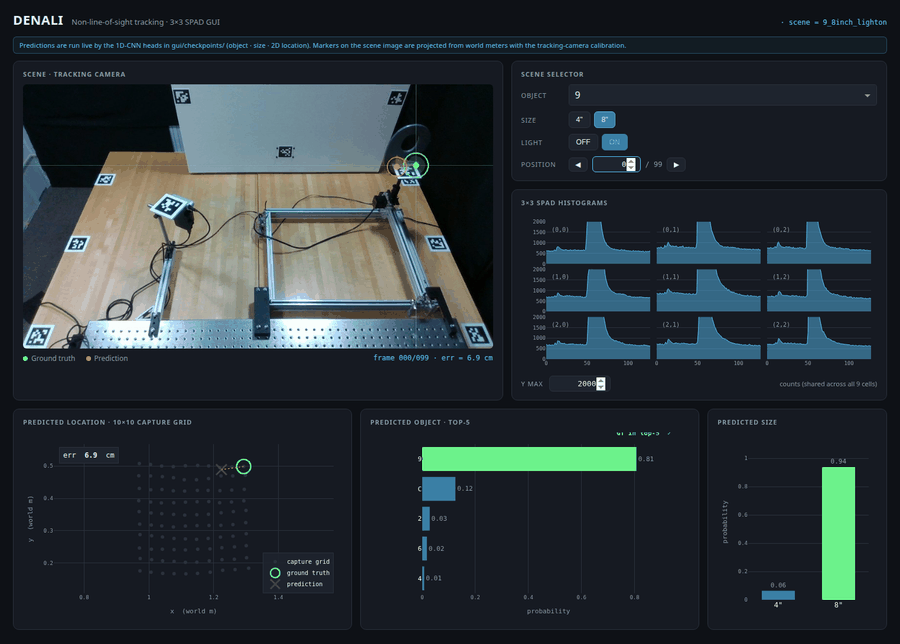
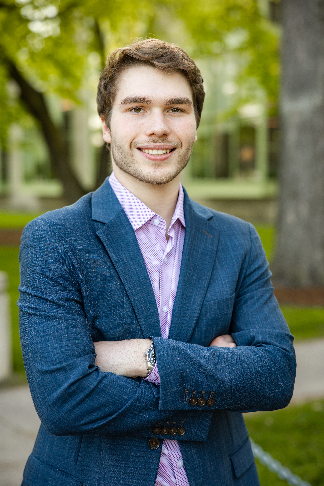
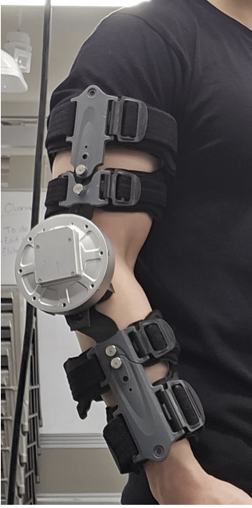
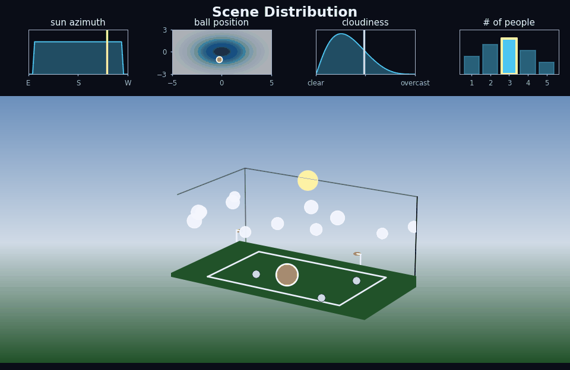
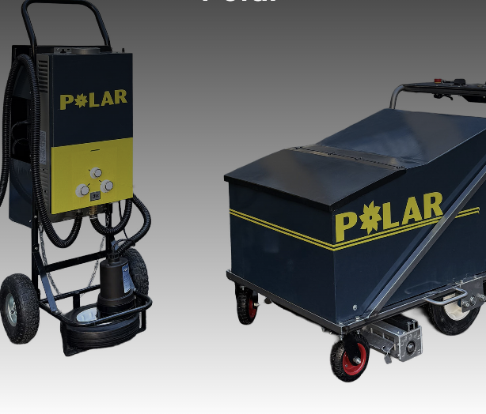
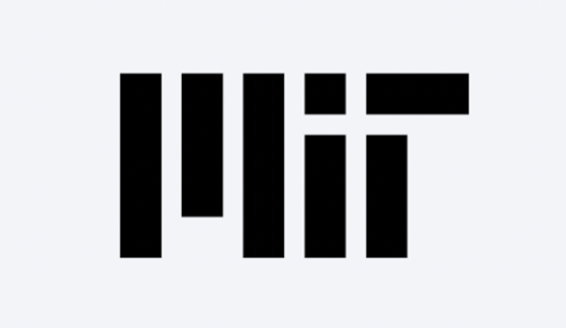

DENALI: A Dataset Enabling Non-Line-of-Sight Spatial Reasoning with Low-Cost LiDARs
CVPR 2026
Highlight Paper
Compute Transparency Champion
Research Assistant · Camera Culture Group · MIT Media Lab
I'm a Research Assistant in the Camera Culture group at the MIT Media Lab, advised by Professor Ramesh Raskar. My interests include computational imaging, robotics, and learning-based sensing and decision-making. I work on single-photon and time-of-flight imaging, with applications in 3D vision, low-light, high-speed, and non-line-of-sight imaging. My work fuses computational imaging with signal processing to enable occluded object detection and tracking in adversarial environments.
I studied Mechanical Engineering and Computer Science at MIT (Class of 2026). Before joining Camera Culture, I worked in MIT's Aerospace Physiology Lab on a predictive exoskeleton and the Plasma Science and Fusion Center on scalable in-reactor tritium breeding for fusion. I also interned at PowerLabs, working on a trailer with robotic deployable solar panels. I like to work on systems that make intelligent decisions given the environment around them.





